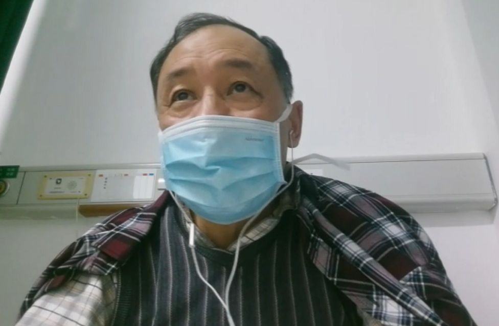
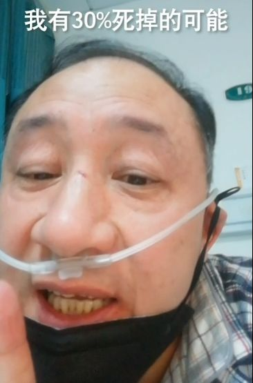

***
***特写|“网红”医生余昌平：除了生死，都是小事
原文链接 备份链接 【财新网】（实习记者 黄雨馨）“目前，信心就是最好的特效药。”“网红”医生余昌平说。“原则上来说，现在病毒没有药物可以治疗，身体、心态、吃好喝好睡好休息好，这是最好的治疗。” 2月23日是余昌平住院第38天。作为武汉大 …
***** *****
*****
*****武汉大学人民医院呼吸内科副主任医师，52岁的余昌平1月中旬确诊了新冠肺炎。**********在与病毒搏斗的40天里，余昌平一度病危，但他用乐观的心态去治疗，录制短视频科普“新冠病毒”，分享自己得病的感受和经历。**********2月24日，余昌平终于治愈出院。*****

住院中的余昌平。
文 | 新京报记者 张芮雪
编辑｜胡杰 校对 | 张彦君
►本文约4096字，阅读全文约需8分钟
武汉大学人民医院呼吸内科副主任医师，52岁的余昌平确诊新冠肺炎后一度病危。余昌平坚持用乐观的心态去治疗，录制短视频科普“新冠病毒”，分享自己得病的感受和经历。2月24日，治愈出院。
余昌平盯着眼前的CT片，黑白胶片上两个相互对称的半圆结构里，白色的斑痕顺着边缘蔓延开来，展示着病毒侵蚀肺部的情况。
这是他自己的肺部CT片。
作为武汉大学人民医院呼吸内科的副主任医师，52岁的余昌平负责新冠肺炎患者的确诊和收治。17年前，他带领30多人的团队抗击非典，全组医护人员实现零感染，而这次，他成了科室里第一个“中招”的，也成为第一个被感染的湖北新冠病毒防治专家组成员。
在与病毒搏斗的40天里，余昌平一度因呼吸困难无法下床，需要使用轮椅才能去做检查，但他说自己一直用乐观的心态去治疗，最终去“阎王爷那里走了一遭”，又回来了。
2月24日，余昌平在两次核酸检测结果为阴性后，治愈出院。将前往武汉大学人民医院的隔离点接受为期14天的医学观察。
治疗期间，他录制短视频科普“新冠病毒”，分享自己得病的感受和经历。其乐观的态度和幽默的风格吸引了众多网友关注，粉丝们称他“余爹爹”、“余可爱”。
呼吸科专家、曾经的重症患者到现在350万粉丝的“网红”。余昌平说，现在病毒暂时还没有药物可以治疗，吃好喝好睡好休息好，这是最好的治疗。他希望能通过自己的讲述，让更多人能科学清晰地认识疾病，知道如何防范不会恐慌。
“这个病本身不可怕”
******* *******
*******
“我可以出院啦！”视频里，余昌平笑得眼睛眯成了缝，快乐的声音从蓝色外科口罩后传来。他站在窗边，阳光透过玻璃洒到墙上，武汉难得有出太阳的好天气。他在这个病房里会诊过无数病人，也在这里隔离治疗了一个多月。

余昌平视频截图。
出院后，他还将继续接受隔离观察。“关在房间里，休息，锻炼。”他描述未来14天的计划。
余昌平把康复归功于积极的心态：“吃得，睡得，希望就蛮大。”
“最好的药物就是身体好，这是一个基础。另外，心态要好，心态不好，那对治疗很没帮助。”在他发在网上的视频里，医院的盒饭被他吃得精光。
余昌平所在科室有个微信群，这里成了大家讨论病例的新阵地。一天，余昌平大学同学的CT片也出现在了群里，对方的肺部感染情况并没有余昌平严重，但正在准备转往重症监护室。他在群里说：“你的心态不对，应该高兴，应该起来走动，不能一天到晚睡在床上，要死的样子。”
同学根据余昌平的建议，把吸氧方式从面罩换成了鼻导管，这样活动起来更方便。几天以后，同学专门给他发消息，表示自己情况好转了。
在过去的一段日子里，余昌平每天都在病房内做锻炼。他通过走路、做体操来恢复四肢力量，通过反复做深呼吸、扩胸运动来恢复肺部功能。
余昌平说，新冠肺炎一般由轻微感冒症状开始，相比非典和其他流感，病程发展缓慢，这为医生的抢治提供了时间；除部分有基础疾病的高龄患者外，其他轻、中和重度患者的治愈可能性极大。“这个病本身不可怕，没什么紧张的。”他说。
离死亡最近的几天
******************
余昌平是1月14日开始发烧的，38.5摄氏度，不流鼻涕、不咳嗽。当时他已经会诊过至少8名“不明原因病毒性肺炎”患者，但是没有想到下一个被感染的就是自己。
连续发烧并没有引起他的警觉，他以为是普通感冒。16日上午是他的专家门诊日，他戴上医用外科口罩和医用帽子，继续出诊。但接诊到一半，就坚持不住了，随后中断了门诊接诊。
1月17日，情况仍没有好转。给自己照完CT后，直接住进了隔离病房。他判断自己的肺炎很有可能也是这次新冠病毒引起的。
那个傍晚，武汉上空飘着淡淡的霾。手里提着CT片的余昌平给妻子拨去电话：“我不回去吃饭了，我住院了，隔离呢。给我把剃须刀拿来，充电器拿来，再拿一个水瓶来。”
余昌平说自己当时的心情很平静，没有任何担心，在呼吸科工作了几十年，他了解病毒性肺炎的演化，“应该很好搞的。”
但是他没想到加重的速度如此之快，入院的第四天，他开始出现胸闷、憋气、呼吸困难等症状。“第四天第五天很痛的时候，我就想哭了。我会不会死掉？”
他在心里计算着，如果他能在接下来的五天内挺过去，那他有百分之七十的机会活过来，但如果没能好转，他活下去的概率只剩百分之三十。
入院第六天，他下床去做CT复查，但已经不能靠自己走过去了。他坐在轮椅上，手里抱着氧气袋，氧气管一直连到耳根，再往前缠在鼻子下。余昌平说，这场大病让他至少瘦了十斤，因为有五天没下床，下肢力量开始退化，“不能用劲了，下床这个脚一下子抽筋了。”
“我病情严重到可能会死掉，当时有的医生护士对这个病也不是很了解，武汉市情况紧急，也没有人手来照顾我。”他说。一方面，担心妻子被传染，另一方面，病人的数量还在急剧增加，加上医护人员感染导致了人手短缺，余昌平吃饭成了问题。最终，余昌平同意了让妻子来送饭。
在余昌平离死亡最近的几天里，他从没看见妻子哭。“她每次都在笑，有时候还会故意惹我生气。我生气就吼她，我说你离我远点，她故意离我近点。她说你能够和我吼，说明你还可以。”
但后来妻子也开始咳嗽了，经过CT检查，也确诊为新冠肺炎，但症状较轻。
生病后，妻子也住进了同一间病房，两人各在一个角落，相互远远地看着。恢复良好的她每天都在房间里跳舞。

余昌平的妻子在病房里跳舞。受访者供图
在被轮椅推去照CT后的两周，余昌平呼吸困难的症状逐渐好转。
“我有活过来的信念。”在接受媒体采访时，他说自己的身体素质本身就比较好，抵抗性强，能和这个病毒打下去。此外，虽然呼吸困难，但能吃能喝能睡。“烧退了我就能吃，我呼吸不畅时吃不动，我慢慢吃。我要有抵抗能力，要有精神，吃了就有命啊。
科普新冠病毒成“网红”
******************
“你是不是很好奇，我好像戴着氧气（罩）。是的，我也感染了。我什么时候感染的，谁感染我的，这是个很难回答的问题，因为我接触过很多病人，因为我冲在最前面，总是会感染的。”余昌平在一个短视频里说。
视频里的他穿着蓝白格纹的衬衣，戴着氧气管和黑色口罩，鼻梁顶部的条形疤痕已经结痂。为了让声音清晰，他把口罩耷拉在下巴上，露出缺块的门牙。
这是2月1日，他入院治疗第16天时拍的第一条短视频，累计获得上千万播放量。
在鬼门关闯了一遭，余昌平的身体渐渐恢复。武汉本地一家传媒公司邀请他开通短视频。怀着做知识普及的目的，他一次性发去了50多分钟的视频素材，后被剪辑成多个短视频发布在网上。视频里的他坐在病床上，吸着氧，面对手机镜头谈对新冠肺炎的体会。
“以前看病等七八个小时，住院等好多天，到处跑，流动的传染源呐，这里找医院，那里找医院，很大的问题。现在都明显的改善，很有信心，是真的很有信心，你看我一直在笑嘛，一个我性格就这个样子，给点阳光就灿烂，再一个笑代表信心，笑代表力量，我想给你们信心和力量。”视频里，余昌平操着一口武汉口音的普通话，双手配合语气变换着手势，有时候跷起大拇指，有时候指着自己咧嘴笑，有时候竖起拇指举过头顶。
他的视频多用自己或身边医生的发病故事作为开头，然后讲新冠肺炎的临床表现、治疗注意事项和预防措施。他说的最多的几句话是“不用怕”、“很好搞的”。他表示，目前大众对新冠肺炎的了解有限，这是民众心理恐慌的根源，而他可以用自己的专业经验弥补这一点。
评论区，有网友说看余昌平的视频能够缓解焦虑，压抑多天的心情变得越来越好。留言大多是祝他和妻子早日康复的，也有网友讲述亲人的生病症状，向余昌平咨询治疗方案。
“极力地面带微笑，轻松表述自己的病情，是为了不给大家传递负能量，加油啊医生，你的乐观一定能赶跑病毒的。”一位网友评论道。
他简洁明快的语言风格吸引了大量网友，有人叫他余舅舅、余爹爹，还有人叫他余可爱。
他说，拍视频的本意是让更多人了解新冠肺炎，结果自己却被宣传成了“网红”。他最怕出名了，但看到越来越多人在关心他，他不能半途而废。后来再发新视频的时候，他会把衬衣的纽扣扣好，头顶的发丝都统一梳向一个方向。
“用武汉话说，恐慌个毛线，天塌下来有长个子顶着，疾病来了，我们医务人员们会冲在前面，没什么可怕的。”他在视频里说。
住院期间，他累计发布了几十条短视频，粉丝总数超过了350万。
同科室感染的医护人员大都康复
******************
岁末年初，武汉天气阴冷，也是每年呼吸科医生最繁忙的时间。1月7日前后，医院的情况开始和往常不一样：往年的同期也会出现病毒性肺炎的患者，平均每月一到两个；但今年，他一次性会诊了不下五名患者，后来都以病毒性肺炎收治入院。
那段时间，他和同事还是戴着口罩，穿着白大褂正常上班。直到住院，他才第一次见到有穿防护服的医生。
和余昌平同一批确诊的还有一名医生，再后来，他所在科室陆续有十多名医护人员感染。余昌平说，他们都是在疫情早期感染的，目前大部分人已康复出院。
2月24日，中国-世界卫生组织联合专家考察组通报，全国共有3387名医务人员感染新冠病毒，包括确诊病例2055例，其余为疑似病例和临床病例；其中90.4%来自武汉。
中国疾控中心发布的一份报告显示，医疗物资匮乏、床位紧缺、人员调度困难等导致医疗人员超负荷工作，生理心理压力大，这或许是医疗人员防护失败的原因之一。
余昌平说，疫情刚暴发时病人数量多，且防护不到位，加上新冠病毒的强传染性，造成了医护人员的批量感染；这也加重了特殊时期医护人员短缺的情况。“有的时候（病毒传染）偷偷摸摸的，静悄悄的，医护人员感染很正常。但是现在医护人员感染少了，防护做得好，引起了重视。”
17年前，余昌平和其他30多名医护人员在医院的发热门诊，抗击SARS感染引起的非典型性肺炎。“那时候更重视，防护搞得很好的，那时候防护就跟我们现在的防护差不多，我们后来都没有医务人员感染，”他说。
SARS的高死亡率和病情的快速演化曾让他焦急，但这次的新冠肺炎他没觉得可怕。他告诉记者，虽然两次的应对情况相似，甚至有所重复，但新冠肺炎从普通型往重型进展的速度偏慢，给了医生更多治疗和抢救的时间，只要及时治疗，死亡风险很小。
25日，他的妻子连续两次核酸检测为阴性，也达到出院标准。
余昌平说，隔离结束后，他会重回医生岗位，到时候忙碌起来，不一定再有时间拍摄视频。以前有空的时候，他喜欢看武侠电视剧。但最近他看得很少，因为他也在忙着“行侠仗义”，只不过敌人是小到看不见的病毒。
*洋葱话题*
*▼*
*****你看过新冠病毒的科普视频吗？*****
*后台回复关键词*****“洋葱君” ，加入读者群****
***推荐阅读***


**29岁殉职医生彭银华的最后20天
**

*********既然在看，就点一下吧****** *********
*********
原文链接 备份链接 【财新网】（实习记者 黄雨馨）“目前，信心就是最好的特效药。”“网红”医生余昌平说。“原则上来说，现在病毒没有药物可以治疗，身体、心态、吃好喝好睡好休息好，这是最好的治疗。” 2月23日是余昌平住院第38天。作为武汉大 …
原文链接 备份链接 呼吁大家，为了我们这个历经磨难的国家，为了我们这群保家卫国的无名氏，为了在一线奋斗的各个方面的人们，再安心宅在家里一段时间吧，这样之前的付出才有意义！ 口述 | 亚 楠（化名） 整理 | 陈 冰 我和老公都是湖北仙桃 …
原文链接 备份链接 图片来源：pexels 文：央视新闻 孙牧宁 近日，新加坡卫生部门通报称，一名57岁的女性同时确诊感染登革热和新冠病毒肺炎，这是新加坡首例类似病例。 卫生部称，这名57岁的病患最初送医后被确诊感染登革热。在住院后，该名 …
原文链接 备份链接 有时候半夜突然想到某个可能的漏洞，惊出一身冷汗。 记者 | 黄 祺 抗击新冠肺炎疫情的紧要关头，医院不能失守。 中国疾控中心2月17日的一份研究报告显示，全国已有3019名医务人员感染了新型冠状病毒，其中包括1716 …
原文链接 备份链接 研究者正试图揭示新冠病毒的致病性、致死性机制，为临床治疗提供新依据，阶段结果是新冠病毒的致病特征与SARS相似，而进一步的结果或将由解剖揭开 2020年2月初，武汉金银潭医院隔离病区内，医护人员正在给新冠肺炎患者做治 …